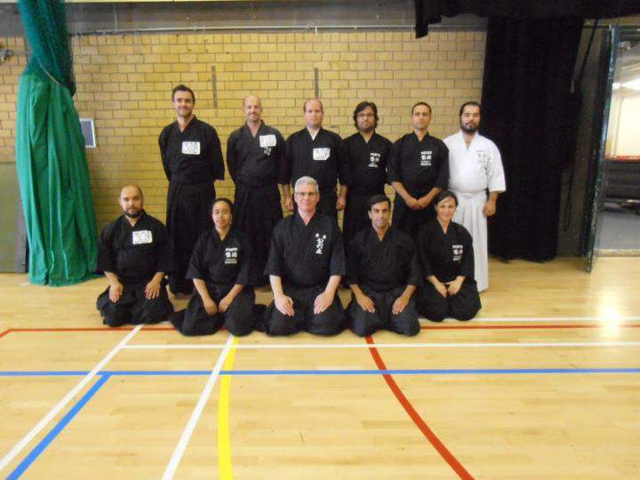
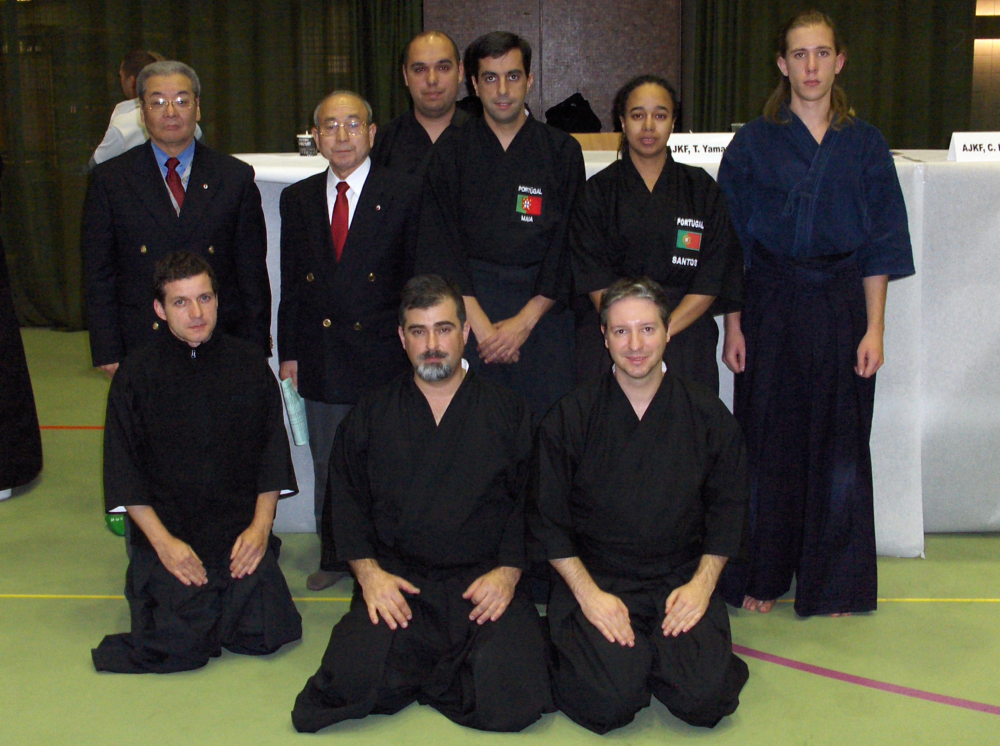
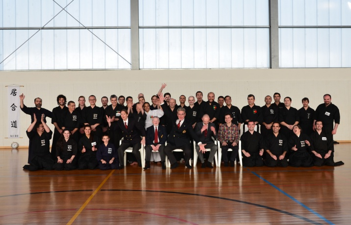
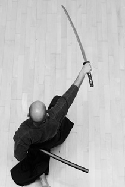

Noticias

2013.10.31
ESTÁGIO NACIONAL DE IAIDO DE 2013

Nos próximos dias 23 e 24 de Novembro, na Escola Secundária Delfim Santos em Lisboa, terá lugar o Estágio Nacional de Iaido de 2013.
Mais uma vez contaremos com a presença já habitual dos senseis Chris Mansfield (Iaido 7 Dan Renshi) e Len Bean (Iaido 7 Dan Renshi) de Inglaterra, bem como do nosso sensei do Zenshinkan, Joaquim Mendes (Iaido 5 Dan).
Os vários seminários anteriores que já tivemos na presença destes senseis em Portugal não deixam dúvidas de que esta será mais uma memorável e entusiasmante experiência de aprendizagem e convívio.
Neste estágio serão realizados exames de graduação Ikkyu (1 Kyu) e Shodan (1 Dan) em Iaido.
A participação no estágio encontra-se acessível a todos os praticantes ou interessados nesta arte marcial, sendo que a inscrição nos exames está reservada aos sócios da Associação Portuguesa de Kendo (APK).
A inscrição no estágio e exames deve realizar-se através deste link.
Através do mesmo link encontra-se também toda a informação necessária acerca do programa e horários do estágio, localização, transportes, preços e pagamento, condições, e contactos úteis.
2013.08.30
Inicio de nova época
O clube Zenshinkan ICL retoma a prática já no próximo sábado, dia 31 de Agosto de 2013.
Iniciamos os treinos com os horários normais de Sábado:
09:30 - 11:00 Iaido
11:15 - 13:00 Jodo
2013.07.12
Um Adeus a António Costa

É com pesar e muita tristeza que comunicamos o falecimento do nosso colega e amigo António Costa.
O choque desta inesperada notícia apanhou-nos de completa surpresa, e faremos o nosso melhor para homenagear o tempo que ele passou na nossa companhia.
O António juntou-se ao nosso clube em 2006, e desde essa altura praticou, evoluiu e subiu de graduação em Iaido e em Jodo, ao mesmo tempo que todos nós; os treinos, seminários e outros eventos eram alegrados pela sua constante boa disposição, humor, simpatia e espírito de camaradagem, e todos nós partilhámos com ele felizes momentos e acontecimentos, que recordaremos com saudade.
As nossas sinceras condolências e sentimentos vão para a sua família e amigos.
Era um grande companheiro nosso, e partilhava a nossa paixão pelas artes marciais. Sentiremos a sua falta.
Um muito obrigado por teres feito parte de e contribuído para a construção deste grupo que é o Zenshinkan.
2013.06.22
TAIKAIS NACIONAIS DE IAIDO E JODO DE 2013
No passado sábado, dia 15 de Junho, realizaram-se em Aveiro os Taikais Nacionais de Iaido e de Jodo de 2013, nos quais o Zenshinkan marcou a sua presença. Foi um prazer revisitar a cidade de Aveiro e, acima de tudo, rever os nossos colegas e amigos de Aveiro e do Porto.
Neste ano, pela primeira vez o Zenshinkan participou no campeonato por equipas. Os resultados de ambos os Taikais foram os seguintes:
TAIKAI NACIONAL DE IAIDO:
Categoria Mudan/Shodan:
- João Mauro Rocha (CJIPorto)
- José Ricardo Coutinho (CJIPorto)
- Miguel Ferreira (CJIVouga)
- Eduardo Brito (CJIMinho)
- Fighting Spirit: Eduardo Brito (CJIMinho)
Categoria Nidan/Sandan:
- António Pinheiro (CJIPorto)
- João Pombo (Zenshinkan)
- João Pires (Zenshinkan)
- Pedro Gomes (Zenshinkan)
- Fighting Spirit: Carlos Coutinho (CJIPorto)
TAIKAI NACIONAL DE JODO:
Campeonato Individual
Categoria Mudan:
- João Mauro Rocha (CJIPorto)
- Robertt Valente (CJIVouga)
- Fighting Spirit: João Mauro Rocha (CJIPorto)
Categoria Shodan:
- Miguel Ferreira (CJIVouga)
- Diogo Paulo (Zenshinkan)
- André Almeida (CJIVouga)
- Eduardo Brito (CJIMinho)
- Fighting Spirit: Eduardo Brito (CJIMinho)
Categoria Nidan:
- José Ricardo Coutinho (CJIPorto)
- João Pires (Zenshinkan)
- Carlos Coutinho (CJIPorto)
- Fighting Spirit: José Ricardo Coutinho (CJIPorto)
Campeonato por equipas:
- Zenshinkan
- CJIPorto
- CJIVouga
- Fighting Spirit: José Ricardo Coutinho (CJIPorto)
Em nome de todo o clube, os nossos parabéns a todos os participantes e um sincero agradecimento a todos os que gentilmente se empenharam na organização destes dois eventos.
2013.05.11
Assembleia geral
Dia 16 de Maio quinta-feira a partir das 19:00 decorrerá a assembleia geral do clube.
A reunião decorrerá na zona das avenidas novas de Lisboa (Av. 5 de Outubro). O espaço está ainda por definir em definitivo.
Os pontos a debater são os seguintes:
- Eleição dos novos corpos sociais
- Assuntos relativos ao normal funcionamento do clube
- Apresentação de informação relevante relativa às Assembleias Gerais das associações das quais fazemos parte (APIAIDO, APJODO)
- Outros
2013.04.13
O clube Zenshinkan está presente no IberAnime
 O clube Zenshinkan está presente no IberAnime, um evento dedicado a todos os fãs e curiosos pela cultura pop japonesa.
O evento de Lisboa está a ser realizado no Pavilhão Atlântico (Sala Tejo) nos dias 13 e 14 de Abril.
O clube Zenshinkan está presente no IberAnime, um evento dedicado a todos os fãs e curiosos pela cultura pop japonesa.
O evento de Lisboa está a ser realizado no Pavilhão Atlântico (Sala Tejo) nos dias 13 e 14 de Abril.
Haverá um stand do clube, e serão feitas demonstrações de Iaido e Jodo durante os dois dias.
2013.04.08
RESULTADOS DOS EXAMES NO ESTÁGIO DE PRIMAVERA DE IAIDO E JODO

É com grande alegria que anunciamos que vários alunos do Zenshinkan foram bem sucedidos em exames de passagem de grau Dan, tanto em Iaido como em Jodo, que se realizaram durante o Estágio Nacional de Primavera de Iaido e Jodo, o qual teve lugar no passado fim de semana de dias 6 e 7 de Abril, em Matosinhos.
Deste modo com entusiasmo que felicitamos os novos graduados:
- a Cláudia Batalha, Shodan (1 Dan) em Iaido
- o Diogo Paulo, Shodan Iaido e Jodo
- o António Costa, Nidan (2 Dan) em Iaido e Jodo
- o Luís Rascão, Nidan em Jodo
- o João Pires, Nidan em Jodo
- o Bruno Belchior, Sandan (3 Dan) em Iaido
- o Hugo Boleto, Sandan em Iaido e em Jodo
- o João Pombo, Sandan em Iaido e em Jodo
As nossas felicitações vão também para os nossos colegas e amigos do Porto, Braga e Algarve, que também passaram nos respectivos exames.
Finalmente, queremos dirigir aos Senseis presentes, e aos membros organizadores do evento um sincero reconhecimento e agradecimento por todo o seu esforço e empenho na concretização de todo o estágio, bem como todo o apoio que nos foi dado.
2013.04.02
ESTÁGIO NACIONAL DE PRIMAVERA
 Nos próximos dias 6 e 7 de Abril, realizar-se-á em Matosinhos o Estágio Nacional de Primavera de Iaido e Jodo.
Nos próximos dias 6 e 7 de Abril, realizar-se-á em Matosinhos o Estágio Nacional de Primavera de Iaido e Jodo.
Este será o primeiro estágio de sempre em Portugal em que serão realizados exames Dan, e desse modo representa mais um marco na história portuguesa destas duas artes marciais.
Contamos assim com a presença já habitual do sensei Chris Mansfield (Iaido 7 Dan Renshi, Jodo 7 Dan Renshi) e do sensei Len Bean (Iaido 7 Dan Renshi, Jodo 5 Dan);
é também com ânimo que recebemos novamente, passados alguns anos, a sensei Harry Jones (Iaido 5 Dan, Jodo 6 Dan).
Temos igualmente o prazer de receber, pela primeira vez a visita dos senseis Stojanka Vidinic (Jodo 5 Dan), aluna do sensei Chris, e Henry Schubert (Iaido 5 Dan, Jodo 5 Dan), da Alemanha.
Finalmente, o estágio contará com a presença do nosso sensei Joaquim Mendes, o professor do Zenshinkan-ICL, que irá também colaborar na orientação do seminário, assim como na avaliação dos exames.
Neste estágio serão realizados exames desde 1 Kyu até 3 Dan, em Iaido e em Jodo.
As inscrições para o estágio encontram-se abertas, e os interessados em participar deverão ler com atenção o site informativo do estágio em que são especificadas todas as condições e termos para a participação no estágio e realização de exames, bem como informação útil sobre alojamento e transportes.
Site do estágio: apjodo.wordpress.com
Alertam-se ainda os interessados para que as inscrições feitas após dia 3 de Abril têm um valor acrescido.
2013.01.15
Demonstração de Iaido e Jodo

No próximo dia 9 de Fevereiro de 2013, pelas 11h, na Escola Secundária Dona Filipa de Lencastre, os membros do Zenshinkan-ICL realizarão uma demonstração de Iaido e Jodo, as duas artes marciais japonesas a cujo ensino e prática o Zenshinkan se tem dedicado, ao longo de vários anos.
Neste evento, esperamos poder transmitir ao máximo a paixão que todos nós temos por estas duas artes marciais e daremos o nosso melhor para, através desta demonstração, dar a conhecer um pouco da sua essência, que surgiu há séculos atrás, e ainda hoje se mantém firmemente enraizada na cultura japonesa.
O Iaido é a antiga arte de desembainhar a espada japonesa. Para muitos a espada por si só é um objecto fascinante, pela sua beleza e detalhe, porém na cultura do Japão a espada tem um significado muito mais profundo, e fortemente associado à virtude e carácter da pessoa que a empunha e a utiliza para se defender. O Iaido cultiva, entre outras coisas, este símbolo: a união entre a espada e o guerreiro, através da aprendizagem e exercício de movimentos corporais que permitem ao praticante adaptar o seu corpo ao manejo da espada e desembainhá-la rápida e naturalmente numa situação de combate, desenvolvendo, com o passar dos anos, um espírito forte e presente.
O Jodo é a arte do manejo do jo, uma arma simples que consiste num bastão cilíndrico de madeira com sensivelmente 1,28m de comprimento. O aparecimento desta arma, bem como do Jodo, remonta ao século XVII, período próspero para os samurais no Japão.
Os factos históricos sobre a origem do jo não são muito claros, e por vezes é difícil separá-los de lendas e ficção. No entanto, a cultura e prática do Jodo, que sobreviveu até aos dias de hoje, permite-nos entender o objectivo para o qual o jo foi inventado: derrotar um adversário armado com uma espada japonesa. Apesar de o Jodo ser uma arte marcial bastante pouco conhecida e divulgada, tem uma estrutura e sistema de aprendizagem muito bem descritos e definidos: através do Jodo, conseguimos observar como uma pessoa armada apenas com um jo (uma arma muito menos sofisticada e aparentemente menos perigosa do que uma espada japonesa) consegue derrotar, de um modo simples, elegante e impressionante, um adversário com uma espada.
Contamos convosco, e esperamos passar uma boa impressão destas artes marciais, e de tudo o que representam.